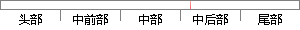

所以才引入了高斯混合模型。
片段位置图

相似结果|
相似片段 1： 4-6 部分特征分布此处截取了四类数据的分布，见图 4-6。由于混合高斯能够更好的解决数据分39布呈现非高斯特性的问题，所以引入了基于 GMM的聚类方法。4.3.2 混合高斯模型聚类实验方案实验方案
相似片段 2：的应用中，由于是在室外，会受到光线变化、天气变化等诸多因素的影响，这种单个的高斯模型来模拟就显得不够用了。所以后来人们又提出了混合高斯模型，也就是用多个高斯模型进行混合背景图像。后来人们又引入了参数更新
相似片段 3：C224实验室，有书柜等平时做实验使用的仪器，走廊中存在2．4G频段的无线局域网，同时为了模拟复杂环境，人为加入了同信道干扰，所以本文使用混合高斯背景模型更新算法实现复杂环境的入侵检测。美国麻省理工大学
相似片段 4：但是多个模型的引入必然会导致混合高斯模型的计算量增加，这无疑会给系统增加很多负担；即使引入了多个高斯模型，仍然无法解决背景中光照突然变化的情况[491。本文正是从这两个方面出发，相对应的提出了一种
相似片段 5：为了证明平移参数的有效性，在下一组实验中，我们将在初始化标记中引入平移参数的和使用原始模型的两组α迭代结果进行比较。图 4.8 农田区域的直方图与拟合模型比较 (a) 没有加入平移参数的混合高斯模型
相似片段 6：高斯模型50 100 150图4．8农田区域的直方图与拟合模型比较(a)没有加入平移参数的混合高斯模型，(b)加入了0．02平移参数的改进后的混合高斯模型20 300．0l40 50 O 10 20
相似片段 7：计算量大的问题。针对这一问题研究人员提出了很多混合高斯模型的改进算法。文献[6】提出了一种在固定摄像机情景下的快速算法，是通过引入状态判断来降低模型匹配和参数更新的频率，从而减少了建模时间。在固定
相似片段 8：2．1加入高斯白噪声时的ICA分离我们用同一种声音信号和枪声的数据源，如图2a所示。其它条件都不变，只是在混合矩阵中加入了--40dB的高斯白噪声，即采用了(1)式的加噪模第2期 黄磊，等：一种引入
相似片段 9：最后对将马尔科夫随机场引入到高斯混合模型中对像素的先验分布进行约束的第二条途径，我们进行了一些研究并发现文献【33】中的方法具有一定的缺陷，在该方法的图像分割的过程中都使用同一个常数∥，而现实中很多
|
※ 片段修改建议 ※
近似词参考：- 所以：以是
- 混合：夹杂 混淆
- 模型：模子
系统自动生成语句：以是才引入了高斯夹杂模子。
注：本片段修改建议为系统自动生成，仅供参考。